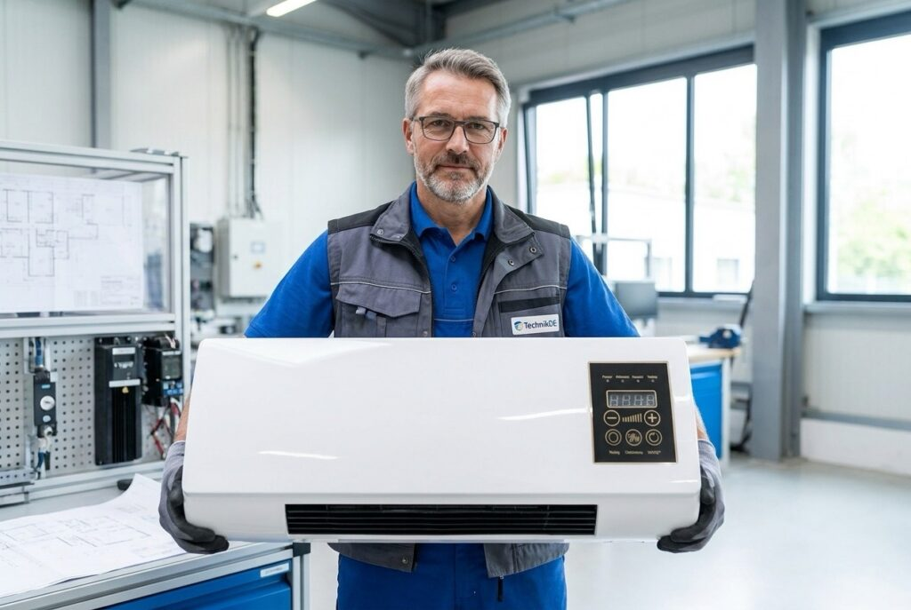

Publireportage
Canicules record en 2026 : ce climatiseur à 137.99 € conçu par un ingénieur français fait de l'ombre aux systèmes coûteux

Dites adieu aux climatiseurs inabordables et aux installateurs hors de prix. Ce nouvel appareil de refroidissement ne nécessite aucune installation, rafraîchit n'importe quelle pièce en quelques minutes et vous protège du piège de l'explosion des factures d'électricité.
Les météorologues sont unanimes : les prévisions indiquent que l'été 2026 s'apprête à battre tous les records historiques. Pour des millions de personnes, cependant, la canicule imminente représente un défi de taille.
Les prix de l'électricité sont déjà au plus haut et continuent de grimper sans relâche. Quiconque tente de refroidir son logement avec une unité de climatisation traditionnelle s'expose actuellement à une véritable asphyxie financière.
Le problème de la climatisation traditionnelle :
• Coûts de départ astronomiques : les consommateurs doivent généralement prévoir plusieurs milliers d'euros rien que pour l'appareil lui-même.
• Installation contraignante : des semaines d'attente pour un technicien, des nuisances sonores et des trous coûteux percés dans vos murs.
• Le piège énergétique quotidien : faire fonctionner un climatiseur standard peut facilement consommer jusqu'à 10 € d'électricité par jour. Cela représente une charge supplémentaire allant jusqu'à 300 € par mois — juste pour un peu de fraîcheur.
En résumé : c'est un luxe que presque personne ne peut plus se permettre — ou ne souhaite plus payer.
Le tournant : un expert du secteur brise le silence
C'est précisément là qu'un ancien ingénieur est intervenu. Il a passé des années en recherche et développement pour l'un des plus grands fabricants mondiaux de climatiseurs, constatant par lui-même à quel point le refroidissement domestique est rendu artificiellement onéreux pour le consommateur final.
Son objectif était limpide : créer une solution abordable pour tous. Un appareil qui génère un froid polaire, mais ne nécessite absolument aucune installation et consomme un minimum d'énergie.
Après trois ans de recherche et développement, il a enfin réussi son pari.
Nous parlons bien sûr du Coolizi Coolzy.

L'histoire derrière l'innovation
Le cerveau derrière le Coolizi Coolzy est l'ingénieur français Luc M. Lorsque l'entreprise d'ingénierie de son père s'est retrouvée au bord de la faillite, Luc a quitté son poste en entreprise pour lui venir en aide. En plein milieu du développement, son père est malheureusement décédé. Luc a continué seul et a réussi : il a sauvé l'entreprise familiale et les 13 emplois locaux.
Aujourd'hui, le Coolizi Coolzy bat tous les records de vente. Malgré l'afflux massif de commandes, Luc refuse de céder à la production de masse bon marché :
"Des multinationales ont voulu racheter le brevet du Coolizi Coolzy pour plusieurs millions d'euros et délocaliser la production en Asie. J'ai refusé. Nous fabriquons selon les normes de qualité rigoureuses de mon père. Je préfère livrer un peu plus lentement pour le moment plutôt que de vendre un produit de qualité médiocre."
Un coup d'œil sous le capot du Coolizi Coolzy montre exactement pourquoi cette invention révolutionne complètement le marché.

Le secret de la fraîcheur arctique : pourquoi le Climatiseur Portable Coolizi est-il si unique ?
Les systèmes de climatisation conventionnels reposent sur des compresseurs lourds, bruyants et des réfrigérants chimiques. Ils consomment d'énormes quantités d'énergie pour faire baisser la température par la force brute. Luc M. a totalement bouleversé ce concept obsolète.
Le Coolizi Coolzy utilise un principe avancé de technologie d'absorption thermique. L'appareil compact aspire l'air intérieur chaud et étouffant pour le faire passer dans une chambre de refroidissement interne scellée. Un filtre nano-alvéolé spécial extrait l'énergie thermique de l'air au niveau moléculaire, le transformant instantanément en un flux d'air cristallin, agréablement sec et glacial.
Le résultat est une technologie propre absolument inégalée sur le marché à trois niveaux majeurs :
• Consommation d'énergie réduite : Alors qu'un climatiseur classique consomme jusqu'à 2 000 watts sur le secteur, le Coolizi Coolzy n'en demande que 45 watts. C'est moins qu'une ampoule traditionnelle ! Rafraîchir votre intérieur ne vous coûtera que quelques centimes par jour.
• Zéro contrainte d'installation (Sans tuyau d'évacuation) : Les unités portables traditionnelles nécessitent un tuyau épais pour évacuer l'air chaud vers l'extérieur par une fenêtre ouverte, ce qui, ironiquement, laisse entrer la chaleur. Puisque le Coolizi Coolzy neutralise l'énergie thermique en interne, il fonctionne totalement sans tuyau. Il suffit de le brancher, de l'allumer, et le tour est joué. Vous pouvez facilement le déplacer d'une pièce à l'autre.
• Qualité d'air parfaitement équilibrée : La climatisation classique assèche complètement l'air, ce qui entraîne souvent des rhumes, des maux de gorge ou des yeux irrités. La technologie thermique du Coolizi Coolzy filtre simultanément les particules de poussière, offrant une qualité d'air naturelle et rafraîchissante, incroyablement douce pour votre système respiratoire.

Ce que nos clients disent du Climatiseur Portable Coolizi :
⭐⭐⭐⭐⭐ « J'étais vraiment sceptique au début : je me demandais si un appareil aussi compact, sans gros tuyau d’évacuation, pourrait vraiment faire face à la chaleur étouffante sous les toits. Mais le climatiseur portable Coolizi m'a totalement bluffé. En seulement 15 minutes, ma chambre est passée d'un 28 degrés caniculaire à un 19 degrés merveilleusement frais. On sent tout de suite que c'est de la qualité, pas un gadget importé bas de gamme. Il vaut chaque centime ! » – Marc K. de Lyon
⭐⭐⭐⭐⭐ « L'été dernier, je n'ai quasiment pas fermé l'œil à cause de la chaleur. Une clim classique n'était pas envisageable pour nous, vu l'explosion des prix de l'électricité et les frais d'installation par un professionnel. Désormais, nous utilisons le climatiseur portable Coolizi dans notre chambre presque tous les soirs. Il est ultra silencieux, diffuse un air incroyablement frais et ne consomme presque rien. Mon application de suivi d'énergie ne voit même pas la différence. Je peux enfin dormir toute la nuit. » – Sarah T. de Toulouse
⭐⭐⭐⭐⭐ « La climatisation standard me donne toujours la gorge sèche et les yeux qui brûlent instantanément. Avec le Coolizi Coolzy, c'est totalement différent : l'air ressemble à une brise marine vivifiante, c'est super confortable. Comme l'appareil est très léger, je le garde dans mon bureau la journée et je l'emporte dans la chambre le soir. On le branche et on profite. C'est ce que j'appelle de l'excellence française. » – Jacques M. de Paris
⭐⭐⭐⭐⭐ « Je cherchais une solution simple pour ma résidence secondaire. Je ne voulais pas que des artisans percent des trous dans mes murs. Le Coolizi Coolzy est arrivé en un éclair, il est incroyablement élégant et a fonctionné parfaitement dès la première seconde. Savoir que je soutiens également une entreprise familiale française et l'emploi local a rendu la décision encore plus facile. Je le recommande vivement pour l'été ! » – Julien B. de Lyon

Questions Fréquentes (FAQ)
• Est-ce que le Coolizi Coolzy nécessite une installation compliquée ? Non, pas du tout. Il n'y a nul besoin d'artisan, d'outils ou de percer des trous dans vos murs. Placez simplement l'appareil où vous le souhaitez, branchez-le sur une prise secteur standard et allumez-le.
• Dois-je constamment le remplir de l'eau ? Non, le réservoir intégré est extrêmement efficace. Un seul remplissage suffit pour faire fonctionner le Coolizi Coolzy jusqu'à 8 à 10 heures en continu — l'idéal pour une nuit de sommeil complète et paisible.
• L'appareil est-il trop bruyant pour une chambre à coucher ? Non. Contrairement aux climatiseurs à compresseur bruyants, le Coolizi Coolzy a été spécialement conçu pour un fonctionnement ultra-silencieux. Il ne vous dérangera pas, que vous regardiez la télévision ou que vous essayiez de dormir.
• Quelle surface l'unité peut-elle rafraîchir ? Il peut facilement couvrir 80 à 120 mètres carrés. Il vous suffit de laisser vos portes intérieures ouvertes pour que l'air frais circule de manière optimale et rafraîchisse efficacement l'ensemble de votre appartement ou de votre maison.

Où puis-je acheter le climatiseur portable Coolizi ?
Pour garantir que tout le monde puisse s'offrir le Coolizi Coolzy, celui-ci est uniquement disponible directement sur la boutique en ligne officielle. Luc M. supprime intentionnellement les intermédiaires et les grandes entreprises, qui feraient autrement grimper le prix à plusieurs milliers d'euros.
Garantie satisfait ou remboursé à 100 % (sans conditions)
Parce que le Coolizi Coolzy était le dernier projet de cœur sur lequel Luc a travaillé avec son défunt père, son objectif n'est pas de réaliser un profit massif. Il souhaite simplement que chaque client soit satisfait et s'assurer de pouvoir rémunérer son personnel dévoué.
C'est pourquoi sa politique est simple : si vous n'êtes pas absolument ravi, vous récupérez votre argent, sans aucune discussion. Testez le Coolizi Coolzy pendant 1 à 2 mois, et si vous n'êtes pas entièrement satisfait, vous recevrez un remboursement de 100 % ! Vous ne prenez absolument aucun risque.
Ne vous laissez pas tromper par les contrefaçons ou les imitations bon marché ! - Si vous voulez être sûr d'acheter le produit original, suivez les étapes suivantes :
Note : Une vente flash avec 50 % de réduction est actuellement en cours !
Consultez le lien ci-dessous pour vérifier si la promotion est toujours active et réservez votre exemplaire avant l'épuisement total du stock actuel :
👉 [CLIQUEZ ICI : Visitez le site officiel du fabricant avec 50 % de réduction]
⭐⭐⭐⭐⭐ Marc L. de Paris : « Il rafraîchit tout notre appartement de 90 m² ! J'étais sceptique quant aux promesses de surface, mais ça fonctionne vraiment. Il nous suffit de laisser les portes intérieures ouvertes, et l'air glacial se diffuse partout. La chaleur étouffante a complètement disparu. »
⭐⭐⭐⭐⭐ Hélène R. de Lyon : « Enfin, plus besoin de redouter la facture d'électricité ! Nous le faisons tourner sans arrêt pendant les canicules. Mon application Linky montre à peine une hausse de consommation. Quand je pense à mon voisin qui dépense 10 € par jour pour sa vieille clim, je sais que j'ai fait le bon choix. »
⭐⭐⭐⭐⭐ Henri W. de Marseille : « On déballe, on allume, et c'est glacial. Pas de tuyau d'évacuation, pas de perçage, pas de stress avec des techniciens. C'est exactement ce que je cherchais pour ma location. Il suffit de l'installer, de le brancher et d'en profiter immédiatement. Une invention géniale. »
⭐⭐⭐⭐⭐ Monique S. de Bordeaux : « Nous dormons à nouveau comme des bébés. Ces nuits d'été moites étaient un véritable calvaire pour nous. Le Coolizi Coolzy est ultra-silencieux et rafraîchit merveilleusement la chambre. L'été 2026 peut arriver sans problème — nous sommes parés. »
⭐⭐⭐⭐⭐ Gérard H. de Strasbourg : « Excellente qualité et un projet avec du cœur. On sent tout de suite que c'est le fruit de l'ingénierie française authentique, et non de la camelote en plastique importée. C'est une superbe entreprise familiale que j'ai été ravi de soutenir par cet achat. »
⭐⭐⭐⭐⭐ Michel M. de Paris : « J'ai économisé des milliers d'euros ! Un artisan local voulait me facturer près de 3 000 € pour installer un système de climatisation fixe. Le Coolizi Coolzy rafraîchit mes pièces tout aussi bien, pour une fraction du prix, et ne consomme pratiquement pas d'électricité. »
⭐⭐⭐⭐⭐ Marie B. de Lyon : « Fini les yeux secs et les rhumes d'été. La clim classique me donne toujours mal à la gorge instantanément. L'air du Coolizi est incroyablement agréable, frais et naturel. C'est parfait pour les allergiques et les personnes sensibles. »
✅ Aucune installation requise
✅ Rafraîchit des appartements entiers
✅ Conception française